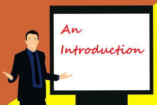
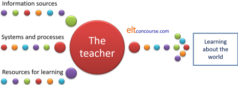
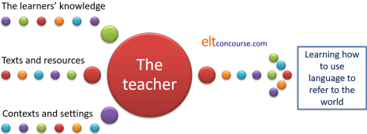
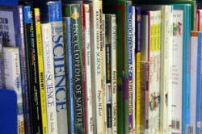
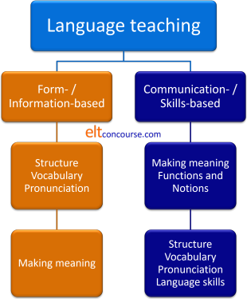

English Language Teaching

This guide is for anyone who is considering working as an English
language teacher.
It assumes you know nothing at all about the profession but it does
assume you went to school.
 |
Mirror image teaching |
Teaching any language is fundamentally different from teaching knowledge-based subjects. Here's how:
- Information-based teaching

- The purpose of education in most settings is to broaden the
knowledge and skills base of the students. That remains
true at all levels of study from primary schools to
post-graduate courses at universities. How the teaching
happens is very variable and may be impressively imaginative and
enthralling or downright dull and boring.
Whichever it is, teachers start from the premise that they know something their students do not and they use their common language to enhance and expand the experiences of the learners.
What is meant here is that most teaching requires the teacher to use the language he or she has in common with the learners to help them acquire new information and skills. For example, in teaching a general school subject such as mathematics, history, sports or literature, teachers and learners share a common language but have experiences which differ. The object of teaching is to use the language to bring the experiences of the teacher and the learners closer together.
This may be done by telling people facts and asking them to remember them, by leading them to discover them for themselves or by showing them how things work.
Learners in this setting are assumed to have the communication skills they need to learn about, talk about, read about and write about the world. What they do not have is the knowledge to do so and that has, somehow, to be transmitted. - Language teaching

- Language teaching is the mirror image of most teaching.
It assumes from the outset that teachers and learners share common experiences of the world but differ in the medium through which they talk, listen, read and write about them. The object of language teaching is to bring the language the learners use into a closer alignment with the language which the teacher is there to help them acquire.
Learners in this setting are assumed to have a sound knowledge of the world and its systems so do not need to be taught facts. What they do not have is the ability to talk about, hear about, read about and write about the world in English (or whichever other language is the target) and that is skill that has to be developed and practised, not transmitted.
We cannot teach people a language in the way that we can teach chemistry or history but we can engender the environment in which language is learned and acquired.
If you prefer a graphical explanation:
| Information-based teaching |
|  |
| Language teaching |
|  |
In both activities, the central mediating role of the teacher
remains the same.
However, the inputs and outputs are reversed.
Briefly, the terms on the left can be summarised:
- For information-based teaching:
- Sources include text books, the teacher, the web, films, samples, external visits and so on.
- Systems and processes refers to equipment, information technology, science and technology equipment etc.
- Resources for learning include computers, laboratories, libraries, learning centres and more.
- For language teaching:
- The learners' knowledge includes their knowledge of the world in general, their own experiences and their own views and understanding of how things are and how things happen.
- Texts and resources may be films, audio recordings, course books, materials written for learners, authentic texts and more.
- Context and settings refers to the environment in which the language is set: the participants, their purposes, their roles, the setting, the level of formality and so on.
|  |
Subject matter |
Deciding what to teach in information-based education is a
comparatively simple matter.
Although the details of constructing a rational syllabus may be
fiendishly complicated, the process is one of deciding which bits of
information should come first and then building on them as you go up
the ladder from complete ignorance of the topic to full mastery.
Few ever reach the top of the ladder, naturally, and in some
subjects, no-one ever does.
It used to be the assumption that language teaching can be designed in
roughly the same way by taking the simplest grammar and vocabulary
first and building on it until full mastery of the language is
attained.
That meant, for example, starting with easy grammar such as:
My name is John
That is a desk
going on to more complex structures such as:
If I had known you were coming, I'd've baked
a cake
John told Mary she should have consulted Fred and then
decided what they will have been able to accomplish by the end of
the year
and building up to the ability to speak at length and write the
occasional novel or encyclopaedia in English.
It is now pretty much accepted in the profession that focusing on
the forms of the language is not enough. There are, basically,
two approaches but they often work in harmony and happen in the same
lessons, like this. (When you have looked at the diagram and
made some sense of it, click on it for an explanation.)
|  |
On the left, in orange,
we have a traditional approach to language teaching which
starts from the understanding that language is a system of
grammar, words and sounds. If that is true, it makes sense to teach the structure, vocabulary and pronunciation (the forms) and then see how we can use them to make meaning with other people in the language. On the right, in blue, we have a communicative approach to language teaching which starts from the understanding that language is used to make meanings. If that is true, it makes sense to teach how to do things such as apologise, ask for help, complain etc. (the functions) and express ideas like lateness, size, comparison, attractiveness etc. (the notions). Then we can see how the language encodes these ideas using its grammar, words and sounds. |
There's a bit more to it than that, of course (well, quite a lot more, actually), or nobody would need a training course but, essentially, these are the two routes to follow.
The learners |
Because of the slightly strange nature of language teaching
compared to information-based teaching, it is not the decisions
about subject matter
which come before consideration of the learners but the learners who often determine
the subject matter.
When, for example, we set out to write a syllabus and design a
course in nuclear physics, we are mostly concerned with the nature
of the topic and select what is to be taught first and at what level
of detail.
When we come to writing a language syllabus and designing a course,
we are, naturally, concerned with what to teach but we base that on
questions (and answers) about the learners:
What level are they?
What do they need to be able to do in the language?
Where are they going to use the language?
Who are they going to communicate with?
Will they need to speak, read, write and listen equally and
equally well?
Are they learning the language to function in the workplace?
Are they learning the language to study in it?
Are they learning the language to talk to native speakers or
other learners?
and so on.
Apart from children learning a language at school, who may have no
idea why they are learning it and may, in fact, not want to learn it
at all, most learners have a reasonably good idea about why they are
learning, what they will need to be able to do in the language and
how well they will need to be able to do it.
For example:
- Someone who needs the language to answer the telephone in
English and write short emails to customers will need good
listening and speaking skills and some less good writing skills.
The ability to read a novel or short story for pleasure in
English is something they certainly don't need.
They do not need, either, to write academic essays in English or long texts. - Someone who needs the language to travel and communicate in English probably needs only good speaking and listening skills, some ability to read simple texts and very little (if any) skill in writing.
- Someone who needs the language to access study materials (but not to live or work in an English-speaking environment) probably only needs good reading skills and a wide vocabulary.
- Someone recently arrived to live in an English-speaking society will need all the skills but urgently they will need good comprehension skills and the ability to get things done in spoken English.
In summary, taking into account the needs of the learners leads us to focus on:
- The functions people need to be able to use and understand.
- The skills (reading, writing, speaking and listening) that they need to use.
- The level of formal accuracy (grammar, spelling, pronunciation etc.) that they need to attain.
- The types of settings in which they need to learn and practise the language.
 |
The teacher |
The roles people associate with teachers they have encountered are usually:
- An informer / knower: transmitting information in some way, by dictation, elicitation and leading, questioning, demonstrating and so on.
- An instructor: telling people what to do, setting tasks and tests, directing people to resources, giving homework and so on.
- An assessor: marking homework, evaluating the quality of people's work and contributions etc.
- A planner: designing courses and the lessons within them.
- A counsellor: advising on learning, careers, further study and so on.
- A disciplinarian: telling people off, making rules, policing the environment and so on.
Language teachers, too, need to take on these roles from time to time but also to adopt a range of other roles which include:
- Contributor: taking part in discussions and conversations, being part of a brainstorming group, taking part in a role play and so on.
- Diagnostician: spotting errors, analysing gaps in knowledge etc.
- Facilitator: helping and making things a little easier by supplying language or models of language.
- Language resource: a walking, talking grammar book and dictionary for your learners.
- Monitor: checking that people are on track in tasks and being aware of how well they are doing.
- Narrator: telling stories and anecdotes, personal or otherwise.
- Relationship builder: maintaining a good rapport between all the members of the class. Learning a language can be a threatening and stressful experience.
- Methodologist: judging approaches and materials in the light of the learners' needs and the settings in which they will use the language.
Now you know why you need a training course. To be able to
do all of this, you need to know your subject and know your
methodology.
There is more to the former than the ability to speak the language
and much more to the latter than being helpful and friendly.
Some terminology explained |
English Language Teaching, in common with many professions, has
its own terminology with which practitioners need to be familiar.
There are glossaries on this site, linked below, to help.
You may come across the following if you are researching courses and
training programmes:
- EAP
- English for Academic Purposes: for people who need to study in an English-speaking environment.
- EfB
- English for business purposes focusing on the roles and language people take and use in commercial or other business environments.
- EFL
- English as a Foreign Language: a general term for all types of English Language Teaching, whatever its specific aims.
- EIL
- English as an International Language: English used as a system of communication between people who do not speak it as a first language.
- ELF
- English as a Lingua Franca: as for EIL but generally a simplified and pared down form of the language, almost a pidgin in some people's views.
- ESOL
- English to Speakers of Other Languages: in any setting whether the surrounding society is English speaking or not.
- ESP
- English for Specific Purposes: English for people with specific occupational, academic or other purposes for learning the language.
| Related guides | |
| Is ELT for me? | a short guide with some frequently asked questions and a link to a test to help you decide if the career is right for you |
| advice | a guide to how to decide on a training course and what to avoid wasting your money on |
| the CELTA index | a section of the site devoted to helping people before, during and after an initial training course |
| glossary index | here you will find links to a range of glossaries defining and exemplifying terminology |
| a basic ELT course | this is no substitute for a proper qualification but will help people entering the profession |